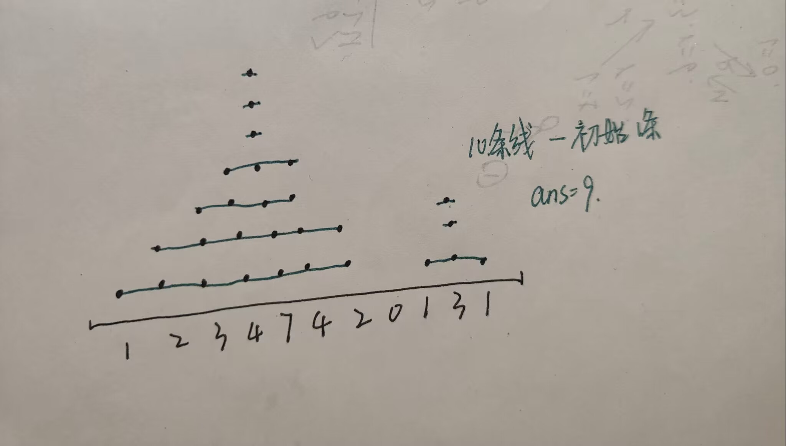

前言点评：本次题目难度不高
A 跳石头
[NOIP2015 提高组] 跳石头
题目背景
NOIP2015 Day2T1
题目描述
一年一度的“跳石头”比赛又要开始了！
这项比赛将在一条笔直的河道中进行，河道中分布着一些巨大岩石。组委会已经选择好了两块岩石作为比赛起点和终点。在起点和终点之间，有 $N$ 块岩石（不含起点和终点的岩石）。在比赛过程中，选手们将从起点出发，每一步跳向相邻的岩石，直至到达终点。
为了提高比赛难度，组委会计划移走一些岩石，使得选手们在比赛过程中的最短跳跃距离尽可能长。由于预算限制，组委会至多从起点和终点之间移走 $M$ 块岩石（不能移走起点和终点的岩石）。
输入格式
第一行包含三个整数 $L,N,M$，分别表示起点到终点的距离，起点和终点之间的岩石数，以及组委会至多移走的岩石数。保证 $L \geq 1$ 且 $N \geq M \geq 0$。
接下来 $N$ 行，每行一个整数，第 $i$ 行的整数 $D_i,( 0 < D_i < L)$， 表示第 $i$ 块岩石与起点的距离。这些岩石按与起点距离从小到大的顺序给出，且不会有两个岩石出现在同一个位置。
输出格式
一个整数，即最短跳跃距离的最大值。
样例 #1
样例输入 #1
1 2 3 4 5 625 5 2 2 11 14 17 21样例输出 #1
14提示
输入输出样例 1 说明
将与起点距离为 $2$ 和 $14$ 的两个岩石移走后，最短的跳跃距离为 $4$（从与起点距离 $17$ 的岩石跳到距离 $21$ 的岩石，或者从距离 $21$ 的岩石跳到终点）。
数据规模与约定
对于 $20%$的数据，$0 \le M \le N \le 10$。
对于 $50%$ 的数据，$0 \le M \le N \le 100$。
对于 $100%$ 的数据，$0 \le M \le N \le 50000,1 \le L \le 10^9$。
分析
参考代码
|
|
B Secret Sport
Secret Sport
题面翻译
题目大意
A,B两人玩游戏，游戏规则如下： 整场游戏有多轮，每轮游戏先胜 $X$ 局的人获胜，每场游戏先胜 $Y$ 局的人获胜。
你在场边观看了比赛，但是你忘记了 $X$ 和 $Y$ ，只记得总共比了 $1 \le n \le 20$ 局，和每局获胜的人，请判断谁获胜了。如果A获胜，输出
A，如果B获胜，输出B，如果都有可能，输出?。题目描述
Let’s consider a game in which two players, A and B, participate. This game is characterized by two positive integers, $ X $ and $ Y $ .
The game consists of sets, and each set consists of plays. In each play, exactly one of the players, either A or B, wins. A set ends exactly when one of the players reaches $ X $ wins in the plays of that set. This player is declared the winner of the set. The players play sets until one of them reaches $ Y $ wins in the sets. After that, the game ends, and this player is declared the winner of the entire game.
You have just watched a game but didn’t notice who was declared the winner. You remember that during the game, $ n $ plays were played, and you know which player won each play. However, you do not know the values of $ X $ and $ Y $ . Based on the available information, determine who won the entire game — A or B. If there is not enough information to determine the winner, you should also report it.
输入格式
Each test contains multiple test cases. The first line contains a single integer $ t $ $ (1 \leq t \leq 10^4) $ - the number of test cases. The description of the test cases follows.
The first line of each test case contains an integer $ n $ $ (1 \leq n \leq 20) $ - the number of plays played during the game.
The second line of each test case contains a string $ s $ of length $ n $ , consisting of characters $ \texttt{A} $ and $ \texttt{B} $ . If $ s_i = \texttt{A} $ , it means that player A won the $ i $ -th play. If $ s_i = \texttt{B} $ , it means that player B won the $ i $ -th play.
It is guaranteed that the given sequence of plays corresponds to at least one valid game scenario, for some values of $ X $ and $ Y $ .
输出格式
For each test case, output:
- $ \texttt{A} $ — if player A is guaranteed to be the winner of the game.
- $ \texttt{B} $ — if player B is guaranteed to be the winner of the game.
- $ \texttt{?} $ — if it is impossible to determine the winner of the game.
样例 #1
样例输入 #1
1 2 3 4 5 6 7 8 9 10 11 12 13 14 157 5 ABBAA 3 BBB 7 BBAAABA 20 AAAAAAAABBBAABBBBBAB 1 A 13 AAAABABBABBAB 7 BBBAAAA样例输出 #1
1 2 3 4 5 6 7A B A B A B A提示
In the first test case, the game could have been played with parameters $ X = 3 $ , $ Y = 1 $ . The game consisted of $ 1 $ set, in which player A won, as they won the first $ 3 $ plays. In this scenario, player A is the winner. The game could also have been played with parameters $ X = 1 $ , $ Y = 3 $ . It can be shown that there are no such $ X $ and $ Y $ values for which player B would be the winner.
In the second test case, player B won all the plays. It can be easily shown that in this case, player B is guaranteed to be the winner of the game.
In the fourth test case, the game could have been played with parameters $ X = 3 $ , $ Y = 3 $ :
- In the first set, $ 3 $ plays were played: AAA. Player A is declared the winner of the set.
- In the second set, $ 3 $ plays were played: AAA. Player A is declared the winner of the set.
- In the third set, $ 5 $ plays were played: AABBB. Player B is declared the winner of the set.
- In the fourth set, $ 5 $ plays were played: AABBB. Player B is declared the winner of the set.
- In the fifth set, $ 4 $ plays were played: BBAB. Player B is declared the winner of the set.
In total, player B was the first player to win $ 3 $ sets. They are declared the winner of the game.
分析
参考代码
|
|
C 众数
[THUPC 2023 初赛] 众数
题目描述
你有若干个 $[1,n]$ 内的正整数：对于 $1 \le i \le n$，你有 $a_i$ 个整数 $i$。设 $S = \sum_{i=1}^n a_i$。
对于一个序列 $p_1,p_2,\cdots,p_l$，定义其众数 $\text{maj}(p_1,p_2,\cdots,p_l)$ 为出现次数最多的数。若有多个数出现次数最多，则其中最大的数为其众数。
现在你需要把这 $S$ 个数排成一个序列 $b_1,b_2,\cdots,b_S$，使得 $\sum_{i=1}^S \text{maj}(b_1,b_2,\cdots,b_i)$ 最大。输出该最大值。
输入格式
第一行一个整数 $n$，表示值域。
接下来一行 $n$ 个正整数 $a_1,a_2,\cdots,a_n$，表示每种数的个数。
输出格式
输出一行一个正整数表示 $\sum_{i=1}^S \text{maj}(b_1,b_2,\cdots,b_i)$ 的最大值。
样例 #1
样例输入 #1
1 23 1 3 2样例输出 #1
117提示
样例解释 1
一个达到最大值的序列为 $(3,2,3,1,2,2)$。
数据范围
对于所有测试数据，$1 \le n \leq 10^5$，$1 \le a_1,a_2,\cdots,a_n \le 10^5$。
题目来源
来自 2023 清华大学学生程序设计竞赛暨高校邀请赛（THUPC2023）初赛。
题解等资源可在 https://github.com/THUSAAC/THUPC2023-Pre 查看。
分析
贪心，要让较大的数作为众数的次数最多。
构造排列时按照n~1的顺序排下去，每次先排列尽量满足上述想法的数。
参考代码
|
|
D 大纲
[THUPC 2023 决赛] 大纲
题目描述
小 I、小 O 和小 N 是 ION 大纲的编写者，小 I 负责给每个知识点定难度。
ION 大纲计划列入 $n$ 个知识点，其中小 I 按照自己的认识给其中部分知识点定好了难度，还有部分知识点没有定难度。
知识点之间有依赖关系，这个依赖关系恰好构成了一棵以 $1$ 为根的外向树，知识点 $x$ 指向知识点 $y$ 表示 $x$ 依赖 $y$。依赖关系不具有传递性。
你需要告诉小 I 目前确定下来的难度是否合理。我们认为确定下来的难度是合理的当且仅当存在一个给所有未确定难度的知识点确定难度的方式，使得以下所有条件成立：
- 每个知识点的难度都是非负整数；
- 对于每个依赖其他知识点的知识点 $x$，设 $\max_x$ 为 $x$ 依赖的知识点中难度的最大值，则如果 $x$ 恰依赖一个难度为 $\max_x$ 的知识点，那么知识点 $x$ 的难度为 $\max_x$，否则为 $\max_x+1$。对于不依赖其他知识点的知识点，没有其他限制。
输入格式
本题有多组测试数据。第一行一个整数 $T$ 表示测试数据组数，接下来依次读入每组测试数据。
对于每组测试数据，
- 第一行一个整数 $n$ 表示知识点数量。
- 第二行 $n$ 个整数 $a_1,a_2,\cdots,a_n$，描述每个知识点的难度。若 $a_i = -1$ 表示知识点 $i$ 未确定难度，否则知识点 $i$ 的难度确定为 $a_i$。
- 接下来 $n-1$ 行每行两个整数 $u,v$，表示依赖关系构成的外向树中的一条有向边。
输出格式
对于每组测试数据输出一行：若难度是合理的，输出
Reasonable，否则输出Unreasonable。样例 #1
样例输入 #1
1 2 3 4 5 6 7 8 92 3 0 -1 0 1 2 2 3 3 0 -1 0 1 2 1 3样例输出 #1
1 2Reasonable Unreasonable提示
样例 1 解释
对于第一组测试数据，将知识点 $2$ 的难度定为 $0$ 即满足条件。
对于第二组测试数据，无论如何指定知识点 $2$ 的难度，知识点 $1$ 的难度会产生矛盾。
数据规模与约定
对于所有测试数据，$1 \le T \le 10^5$，$2 \le n \le 10^5$，$-1 \le a_i \le 10^9$，$1 \le u,v \le n$。
保证单个测试点中所有测试数据的 $n$ 的和不超过 $2 \times 10^5$，每组测试数据输入的所有边构成一棵以 $1$ 为根的外向树。后记
大纲发表了。若干天后，小 I 给 ION 比赛投题，却发现有人偷偷改了一笔难度表，导致他的题目超纲。于是小 I 只能把题投给 CPUHT。
题目来源
来自 2023 清华大学学生程序设计竞赛暨高校邀请赛（THUPC2023）决赛。
题解等资源可在 https://github.com/THUSAAC/THUPC2023 查看。
分析
参考代码
|
|
E Chip and Ribbon
Chip and Ribbon
题面翻译
每次可以在一段长度为 $n$，初始值都为 $0$ 的序列中选取一段连续区间，并将区间内所有元素加 $1$，求最少操作数使得该序列与题目所给的序列所有元素相同，输出最少操作数减 $1$。
题目描述
There is a ribbon divided into $ n $ cells, numbered from $ 1 $ to $ n $ from left to right. Initially, an integer $ 0 $ is written in each cell.
Monocarp plays a game with a chip. The game consists of several turns. During the first turn, Monocarp places the chip in the $ 1 $ -st cell of the ribbon. During each turn except for the first turn, Monocarp does exactly one of the two following actions:
- move the chip to the next cell (i. e. if the chip is in the cell $ i $ , it is moved to the cell $ i+1 $ ). This action is impossible if the chip is in the last cell;
- choose any cell $ x $ and teleport the chip into that cell. It is possible to choose the cell where the chip is currently located.
At the end of each turn, the integer written in the cell with the chip is increased by $ 1 $ .
Monocarp’s goal is to make some turns so that the $ 1 $ -st cell contains the integer $ c_1 $ , the $ 2 $ -nd cell contains the integer $ c_2 $ , …, the $ n $ -th cell contains the integer $ c_n $ . He wants to teleport the chip as few times as possible.
Help Monocarp calculate the minimum number of times he has to teleport the chip.
输入格式
The first line contains one integer $ t $ ( $ 1 \le t \le 10^4 $ ) — the number of test cases.
Each test case consists of two lines:
- the first line contains one integer $ n $ ( $ 1 \le n \le 2 \cdot 10^5 $ );
- the second line contains $ n $ integers $ c_1, c_2, \dots, c_n $ ( $ 0 \le c_i \le 10^9 $ ; $ c_1 \ge 1 $ ).
It can be shown that under these constraints, it is always possible to make a finite amount of turns so that the integers in the cells match the sequence $ c_1, c_2, \dots, c_n $ .
Additional constraint on the input: the sum of values of $ n $ over all test cases does not exceed $ 2 \cdot 10^5 $ .
输出格式
For each test case, print one integer — the minimum number of times Monocarp has to teleport the chip.
样例 #1
样例输入 #1
1 2 3 4 5 6 7 8 94 4 1 2 2 1 5 1 0 1 0 1 5 5 4 3 2 1 1 12样例输出 #1
1 2 3 41 2 4 11提示
In the first test case of the example, Monocarp can perform the turns as follows:
- place the chip in the $ 1 $ -st cell; the numbers in the cells are $ [1, 0, 0, 0] $ ;
- move the chip to the next ( $ 2 $ -nd) cell; the numbers in the cells are $ [1, 1, 0, 0] $ ;
- move the chip to the next ( $ 3 $ -rd) cell; the numbers in the cells are $ [1, 1, 1, 0] $ ;
- teleport the chip to the $ 2 $ -nd cell; the numbers in the cells are $ [1, 2, 1, 0] $ ;
- move the chip to the next ( $ 3 $ -rd) cell; the numbers in the cells are $ [1, 2, 2, 0] $ ;
- move the chip to the next ( $ 4 $ -th) cell; the numbers in the cells are $ [1, 2, 2, 1] $ .
分析
令连续的下一cell内数字加一的操作数是不限的，那么我们的目的就变成了画多少条这样的连续的“线”，能达到最终的目的，示意图如下：

在代码实现的时候，只要后一位的高度高于前一位，那么就需要增加：后一位高度-前一位高度 这么多的线，参考代码如下：
参考代码
|
|
F 着色
[THUPC 2023 决赛] 着色
题目背景
远古的笔迹，远古的乐音，远古的历史，远古的 $K_{1000}$，若无人问津，便悄然褪色……
题目描述
给出一个 $n$ 个节点的无向完全图，你需要给每条边标上一个 $0 \sim 9$ 的数字，使得图上不存在一个三元环或五元环满足：其上所有边的数字相同。
输入格式
输入仅一行一个整数 $n$ 表示图的节点数。
输出格式
如果不存在方案，输出一行一个整数
-1。否则输出 $(n-1)$ 行，第 $i$ 行 $(n-i)$ 个字符，第 $i$ 行的第 $j$ 个字符表示 $(i,i+j)$ 的标号。若有多个方案，输出任意一个即可。样例 #1
样例输入 #1
14样例输出 #1
1 2 3012 34 5提示
数据规模与约定
对于所有测试数据，$2 \le n \le 1000$。
题目来源
来自 2023 清华大学学生程序设计竞赛暨高校邀请赛（THUPC2023）决赛。
题解等资源可在 https://github.com/THUSAAC/THUPC2023 查看。
分析
参考代码
|
|
G Treasure Chest
Treasure Chest
题面翻译
题目描述
给你一个数轴，一开始你的位置为 $0$，箱子在 $x$ 处，钥匙在 $y$ 处，$x\neq y$。你需要通过一些操作打开宝箱。
当位置为 $i$ 时，你能执行以下操作：
- 花费 $1$ 秒，走向 $i+1$ 或 $i-1$；
- 花费 $0$ 秒，拿起 $i$ 处的钥匙或箱子，如果此处有的话；
- 花费 $0$ 秒，在 $i$ 处放下箱子；
- 花费 $0$ 秒，打开宝箱，如果箱子在 $i$ 处且你拿着钥匙的话。
另外给出限制：因为箱子很重，所以在整个过程中，扛着箱子的时间不得超过 $k$ 秒（放下再拿起箱子不会使其重置）。
现在给定 $x,y,k$，请问你打开箱子的最短用时为多少？ 每个测试点采用多组数据测试。
输入格式
第一行一个整数 $t\space(1\le t\le 100)$，表示数据组数。
对于每组数据：唯一一行三个整数 $x,y,k\space(1\le x,y\le 100,x\neq y,0\le k\le 100)$，分别表示初始时箱子的位置，钥匙的位置和你扛着箱子的最大时长。
输出格式
共 $t$ 行，第 $i$ 行一个整数表示第 $i$ 组数据的答案。
说明/提示
数据范围与约定
$1\le t\le 100;\1\le x,y\le 100,x\neq y;\1\le k\le 100.$
样例解释
对于样例的第 $1$ 组数据，可以通过以下一系列动作在第 $7$ 秒打开箱子。
- 花费 $5$ 秒走到 $5$,
- 花费 $0$ 秒拿起箱子，
- 花费 $2$ 秒走到 $7$，
- 拿起钥匙、放下箱子并打开箱子，共花费 $0$ 秒。
全过程共花费 $7$ 秒，拿着箱子的时间仅有 $2$ 秒，不超过给定的限制 $k=2$。可以证明不存在更优解。
对于样例的第 $2$ 组数据，你可以花费 $5$ 秒走到 $5$ 并捡起钥匙，再花费 $5$ 秒走到 $10$ 并打开箱子。共花费 $10$ 秒，其中没有扛过箱子，不超过给定的限制 $k=0$。可以证明不存在更优解。
对于样例的第 $3$ 组数据，你无法像数据 $1$ 那样将箱子直接搬到钥匙处，而必须：
- 花费 $5$ 秒走到 $5$ 并扛起箱子；
- 花费 $2$ 秒走到 $7$；
- 此时你已经力竭，达到了限制 $k=2$，所以必须花费 $0$ 秒在 $7$ 处放下箱子；
- 花费 $1$ 秒走到 $8$ 并捡起钥匙；
- 花费 $1$ 秒再走到 $7$ 并打开箱子。
全过程共花费 $9$ 秒且刚好没有超过限制。可以证明不存在更优解。
题目描述
Monocarp has found a treasure map. The map represents the treasure location as an OX axis. Monocarp is at $ 0 $ , the treasure chest is at $ x $ , the key to the chest is at $ y $ .
Obviously, Monocarp wants to open the chest. He can perform the following actions:
- go $ 1 $ to the left or $ 1 $ to the right (spending $ 1 $ second);
- pick the key or the chest up if he is in the same point as that object (spending $ 0 $ seconds);
- put the chest down in his current point (spending $ 0 $ seconds);
- open the chest if he’s in the same point as the chest and has picked the key up (spending $ 0 $ seconds).
Monocarp can carry the chest, but the chest is pretty heavy. He knows that he can carry it for at most $ k $ seconds in total (putting it down and picking it back up doesn’t reset his stamina).
What’s the smallest time required for Monocarp to open the chest?
输入格式
The first line contains a single integer $ t $ ( $ 1 \le t \le 100 $ ) — the number of testcases.
The only line of each testcase contains three integers $ x, y $ and $ k $ ( $ 1 \le x, y \le 100 $ ; $ x \neq y $ ; $ 0 \le k \le 100 $ ) — the initial point of the chest, the point where the key is located, and the maximum time Monocarp can carry the chest for.
输出格式
For each testcase, print a single integer — the smallest time required for Monocarp to open the chest.
样例 #1
样例输入 #1
1 2 3 43 5 7 2 10 5 0 5 8 2样例输出 #1
1 2 37 10 9提示
In the first testcase, Monocarp can open the chest in $ 7 $ seconds with the following sequence of moves:
- go $ 5 $ times to the right ( $ 5 $ seconds);
- pick up the chest ( $ 0 $ seconds);
- go $ 2 $ times to the right ( $ 2 $ seconds);
- pick up the key ( $ 0 $ seconds);
- put the chest down ( $ 0 $ seconds);
- open the chest ( $ 0 $ seconds).
He only carries the chest for $ 2 $ seconds, which he has the stamina for.
In the second testcase, Monocarp can pick up the key on his way to the chest.
In the third testcase, Monocarp can’t use the strategy from the first testcase because he would have to carry the chest for $ 3 $ seconds, while he only has the stamina for $ 2 $ seconds. Thus, he carries the chest to $ 7 $ , puts it down, moves $ 1 $ to the right to pick up the key and returns $ 1 $ left to open the chest.
分析
分类讨论，要么在向右移动的时候就能把key带到chest的位置或者把chest带到key的位置，要么就把chest向右移动k个位置(离key最近)，然后拿key再折返回到chest位置。
参考代码
|
|
H 烂柯杯
[THUPC 2023 决赛] 烂柯杯
题目背景
却说庞统迤逦前进，抬头见两山逼窄，树木丛杂；又值夏末秋初，枝叶茂盛。庞统心下甚疑，勒住马问：“此处是何地？”数内有新降军士，指道：“此处地名落凤坡。”庞统惊曰：“吾道号凤雏，此处名落凤坡，不利于吾。”令后军疾退。只听山坡前一声炮响，箭如飞蝗，只望骑白马者射来。可怜庞统竟死于乱箭之下。时年止三十六岁。后人有诗叹曰：“古岘相连紫翠堆，士元有宅傍山隈。儿童惯识呼鸠曲，闾巷曾闻展骥才。预计三分平刻削，长驱万里独徘徊。谁知天狗流星坠，不使将军衣锦回。”先是东南有童谣云：“一凤并一龙，相将到蜀中。才到半路里，凤死落坡东。风送雨，雨随风，隆汉兴时蜀道通，蜀道通时只有龙。”
——《三国演义》第六十三回：诸葛亮痛哭庞统 张翼德义释严颜
题目描述
$2023$ 年 $5$ 月 $4$ 日 $ \sim 9$ 日，第一届“衢州烂柯杯”世界围棋公开赛本赛第一阶段的赛程在衢州顺利进行。作为疫情后第一场全程线下进行的世界围棋大赛，也是目前中国主办的唯一一项每年一届的世界围棋大赛，无疑引起了国内外广大围棋爱好者的广泛关注。
“羽客一枰无复见，青山留得烂柯名。”衢州是围棋圣地，流传着“王质遇仙”的故事，境内的烂柯山也因此闻名于天下。正因为此，“烂柯”也是围棋的别称之一，从古至今的许多围棋故事、书籍、弈谱等，也有不少化用了“烂柯”的典故，或以“烂柯”定名。
此次“烂柯杯”世界围棋大赛，是在保留原有的“烂柯杯”中国围棋冠军赛的基础上，创办的一项崭新的世界性围棋赛事，吸引了全世界围棋高手前来参加。其中，中国队派出了柯洁、辜梓豪、王星昊、丁浩、李钦诚等 $15$ 员大将参赛，韩国队 $8$ 人，日本队 $5$ 人，还有 $2$ 位棋手来自中国台湾、 $2$ 位棋手来自欧美地区。可以说，全世界最顶尖的围棋高手悉数相聚于此。
随着科技的发展，人工智能的巨大技术进步和网络传媒的全面普及，围棋这项来自中国的传统运动正在焕发出新的活力。在网络上，人们随时可以看到最新的赛事直播，以及人工智能的精准分析和各大围棋高手的细致解读。资源获取的便捷性使得人们对围棋的关注度空前上升，围棋不再是只有少部分懂棋的爱好者才能欣赏的“小众游戏”；围棋高手也不再只是一个神秘的身份，越来越多的围棋高手开始在网络上与棋迷近距离互动，普及围棋知识，讲解最新对局，赢得了一致好评。正如这次参赛的选手中，有一位棋手同时也是粉丝数达 $150$ 多万的网红主播，甚至还有一位棋手是一家网红餐厅的老板。
我们今天故事的主角正是这样一位有着传奇色彩的人物。作为一名清华大学本科在读的学生，同时也是一名顶尖围棋高手，他的一举一动无疑都会引起巨大的关注。此次他参加“烂柯杯”比赛，众人无一例外看好他的比赛前景，尤其是现在韩国围棋”第一人“申真谞九段的巅峰时期，他也被无数中国棋迷寄托以”狙击‘小申’“的重任。$5$ 月 $4$ 日抽签过后，没有任何人会怀疑他能不能赢下 $5$ 日的第一轮比赛，一些围棋高手更是直接放出了”大胜，不可能失败“的预言。
然而，$5$ 月 $5$ 日的比赛还是爆出了惊天大冷门。他在已经胜券在握，AI 胜率达到 $99%$ 的关头，接连选择了“弹幕最多的下法”，最终因为几招致命的失误葬送好局，落败于中国台湾棋手赖均辅八段。赛后，人们在震惊的同时，纷纷猜测本局失利的原因。有人说，他的状态低迷在前些年早已有所体现，“当你在 XX 的时候，小申在下棋”成了调侃他与申真谞战绩差距的一句名言；有人说，他在比赛之前的 $12$ 连胜战绩反而使他心态紧张，从而犯了优势下容易大意的老毛病；也有人拿出了“落凤坡”的典故，以证明他或许命中注定与“烂柯杯”八字不合……但或许，这样的变幻莫测和不可预料性，正是围棋的魅力所在。
请你根据以上所有信息，猜测本文的主角是谁。
输入格式
无输入。
输出格式
输出一个由小写字母组成的字符串，表示上文中提到的主角的名字全拼。如若答案是马云，应当输出
mayun。提示
提示
主角的名字在题面中已经有所提及。
题面中一些看似无厘头的信息实际上是有价值的。
题目来源
来自 2023 清华大学学生程序设计竞赛暨高校邀请赛（THUPC2023）决赛。
题解等资源可在 https://github.com/THUSAAC/THUPC2023 查看。
分析
是签到题，输出"kejie"即可。
参考代码
|
|
I 总投票数
[THUPC 2023 决赛] 总投票数
题目背景
各位亲爱的《La Lumière: Scarlet Intense Flame - Adventurous Scarlet -》玩家：
非常荣幸能与您携手度过了这四年的美好时光，衷心感谢大家的支持与陪伴！
现在，我们非常遗憾的宣布，《La Lumière: Scarlet Intense Flame - Adventurous Scarlet -》将于 2023 年 5 月 28 日 15:00 停止运营服务。
停止运营相关时间表如下：
……
题目描述
在关服前，运营发起了一系列投票，调查哪些游戏内容给玩家带来了更深的印象。
作为系列的忠实玩家，你想知道有多少人参加了关服前的投票，但是运营只公开了最终的投票结果：对于一项包含 $N$ 个选项的投票，选择第 $i$ 个选项的玩家比例为 $P_i$（$1\le i\le N$）。运营在公布结果时进行了四舍五入，所有的 $P_i$ 仅保留到小数点后第 $L$ 位。假设实际有 $K$ 位玩家参加了投票，其中有 $D_i$ 位玩家选择了第 $i$ 个选项，则应该有
$$ P_i-\frac{1}{2}\times 10^{-L}\le\frac{D_i}{K}< P_i+\frac{1}{2}\times 10^{-L} $$
显然，所有的 $D_i$ 必须是非负整数，而 $K=\sum_{i=1}^N D_i$ 则必须是正整数。现在，给定 $N$ 和 $P_i$，请你求出满足 $D_i$ 有非负整数解的最小的总投票数 $K$。
输入格式
输入的第一行包含一个正整数 $N$，表示投票的选项总数。保证 $1\le N\le 100$。
接下来 $N$ 行，每行包括一个 $[0, 1]$ 中的实数 $P_i$，表示选择第 $i$ 个选项的玩家比例。保证 $\sum_{i=1}^N P_i =1$，所有 $P_i$ 均保留到小数点后第 $L$ 位，且 $1\le L\le 6$。
输出格式
输出一个正整数，表示满足要求的最小总投票数 $K$。
样例 #1
样例输入 #1
1 2 3 43 0.166667 0.333333 0.500000样例输出 #1
16样例 #2
样例输入 #2
1 2 3 4 5 6 7 87 0.041096 0.109589 0.109589 0.164384 0.301370 0.068493 0.205479样例输出 #2
173样例 #3
样例输入 #3
1 2 3 4 5 6 7 8 9 10 11 12 13 1413 0.00155 0.03876 0.01584 0.05189 0.08099 0.06825 0.15658 0.10404 0.02640 0.14332 0.12941 0.15529 0.02768样例输出 #3
17766提示
【样例解释 #1】
最小的总投票数为 $6$，对应每个选项的投票数为 $1, 2, 3$。
【样例解释 #2】
最小的总投票数为 $73$，对应每个选项的投票数为 $3, 8, 8, 12, 22, 5, 15$。
【样例解释 #3】
最小的总投票数为 $7766$，对应每个选项的投票数为 $12, 301, 123, 403, 629, 530, 1216, 808, 205, 1113, 1005, 1206, 215$。
【数据范围】
对于所有测试数据，$1\le N\le 100$，$0\le P_i\le 1$，$\sum_{i=1}^N P_i=1$，且 $P_i$ 最多统一保留到小数点后 $6$ 位。
【题目来源】
来自 2023 清华大学学生程序设计竞赛暨高校邀请赛（THUPC2023）决赛。
题解等资源可在 https://github.com/THUSAAC/THUPC2023 查看。
分析
参考代码
|
|
J Points and Minimum Distance
Points and Minimum Distance
题面翻译
给定长度为 $2n$ 的序列 $a$，你需要把这些数分为 $n$ 对，得到 $n$ 个坐标轴上的点。$a$ 中的每个数都要是某一个点的 $x$ 或 $y$ 坐标。注意有些点可能会重合。
之后，你可以选择从一个点出发，选择一条路径走过所有 $n$ 个点至少一次，在某个点处停下。
你需要求出路径总长度的最小值。本题中两点间距离为曼哈顿距离，即 $(x_1,y_1)$ 和 $(x_2,y_2)$ 间距离为 $|x_1-x_2|+|y_1-y_2|$。
题目描述
You are given a sequence of integers $ a $ of length $ 2n $ . You have to split these $ 2n $ integers into $ n $ pairs; each pair will represent the coordinates of a point on a plane. Each number from the sequence $ a $ should become the $ x $ or $ y $ coordinate of exactly one point. Note that some points can be equal.
After the points are formed, you have to choose a path $ s $ that starts from one of these points, ends at one of these points, and visits all $ n $ points at least once.
The length of path $ s $ is the sum of distances between all adjacent points on the path. In this problem, the distance between two points $ (x_1, y_1) $ and $ (x_2, y_2) $ is defined as $ |x_1-x_2| + |y_1-y_2| $ .
Your task is to form $ n $ points and choose a path $ s $ in such a way that the length of path $ s $ is minimized.
输入格式
The first line contains a single integer $ t $ ( $ 1 \le t \le 100 $ ) — the number of testcases.
The first line of each testcase contains a single integer $ n $ ( $ 2 \le n \le 100 $ ) — the number of points to be formed.
The next line contains $ 2n $ integers $ a_1, a_2, \dots, a_{2n} $ ( $ 0 \le a_i \le 1,000 $ ) — the description of the sequence $ a $ .
输出格式
For each testcase, print the minimum possible length of path $ s $ in the first line.
In the $ i $ -th of the following $ n $ lines, print two integers $ x_i $ and $ y_i $ — the coordinates of the point that needs to be visited at the $ i $ -th position.
If there are multiple answers, print any of them.
样例 #1
样例输入 #1
1 2 3 4 52 2 15 1 10 5 3 10 30 20 20 30 10样例输出 #1
1 2 3 4 5 6 79 10 1 15 5 20 20 20 10 30 10 30提示
In the first testcase, for instance, you can form points $ (10, 1) $ and $ (15, 5) $ and start the path $ s $ from the first point and end it at the second point. Then the length of the path will be $ |10 - 15| + |1 - 5| = 5 + 4 = 9 $ .
In the second testcase, you can form points $ (20, 20) $ , $ (10, 30) $ , and $ (10, 30) $ , and visit them in that exact order. Then the length of the path will be $ |20 - 10| + |20 - 30| + |10 - 10| + |30 - 30| = 10 + 10 + 0 + 0 = 20 $ .
分析
构造题，根据题意可以推断，ans只分别与x集合的差值和、y集合差值和有关。显然，（大数-小数）+（大数-小数）的结果劣于（大数-大数）+（小数-小数）。
故此题，在进行排列后按序先分配x再分配y，直接统计x有序集合与y有序集合的差值即可（注意结果除去x，y交界的一对差）。
参考代码
|
|
K 速战速决
[THUPC 2023 初赛] 速战速决
题目描述
小 I 与小 J 正在玩一个叫做“开火车”，又称作“拖板车”和“小猫钓鱼”的扑克游戏。游戏规则如下，注意其与一般玩法可能有不同：
- 有 $2n$ 张牌，其中对于整数 $1 \le i \le n$，牌面为 $i$ 的牌恰好有 $2$ 张。
- 游戏开始时，小 I 和小 J 各拿其中 $n$ 张牌组成双方的初始手牌。
- 维护一个公共牌堆（可以将其看作一个栈），初始没有牌。小 I 与小 J 依次行动，小 I 先手。一次行动时，行动方依次进行以下操作：
- 将手牌中的一张牌放在公共牌堆顶；
- 若此时公共牌堆中有两张相同的牌，则这两张相同的牌以及在这两张牌之间的所有牌从公共牌堆移到当前行动方手牌中；
- 若此时当前行动方没有手牌，则当前行动方失败，另一方胜利。
小 J 是扑克萌新，所以会按照以下策略行动：
- 维护一个队列，初始将 $n$ 张手牌按照一定顺序放入队列中；
- 每次行动时，将队列开头的牌放在公共牌堆顶；
- 若小 J 放入某张牌后公共牌堆中有两张相同的牌，则按照在公共牌堆中自顶到底的顺序将获得的牌放入队列尾。
小 I 通过偷看得到了小 J 的策略以及队列中牌的顺序。现在小 I 不仅想获胜，还想速战速决，用最少的行动次数获胜，但他也是扑克萌新。所以给定小 J 队列中的 $n$ 张牌以及它们的顺序，你需要给出小 I 的策略，使得小 I 能够获胜，同时行动次数最少，或者告诉他这是不可能的。
输入格式
每组数据的第一行一个整数 $n$ 表示牌面的种数。
第二行 $n$ 个整数 $a_1,a_2,\cdots,a_n$，从队头到队尾的顺序依次描述小 J 队列中的牌。
得到小 J 的 $n$ 张手牌也就得到了小 I 的 $n$ 张手牌，因此不会输入小 I 的手牌。
输出格式
如果小 I 不可能获胜，只需要输出一个整数
-1；否则第一行输出一个整数 $s$，表示你给出的策略中小 I 的行动次数。接下来一行 $s$ 个整数，依次描述每次行动时小 I 从手牌中放入公共牌堆的牌的牌面，两个数之间以一个空格分隔。注意你给出的策略要满足 $s$ 最小。样例 #1
样例输入 #1
1 23 1 3 3样例输出 #1
1 23 2 1 2样例 #2
样例输入 #2
1 21 1样例输出 #2
1-1提示
样例解释 1


子任务
对于所有测试数据，$1 \le n \le 3 \times 10^5$，$1 \le a_1,a_2,\cdots, a_n \le n$，且每个整数在序列 $a$ 中至多出现两次。
题目来源
来自 2023 清华大学学生程序设计竞赛暨高校邀请赛（THUPC2023）初赛。
题解等资源可在 https://github.com/THUSAAC/THUPC2023-Pre 查看。
分析
参考代码
|
|
L 滑雪
[SHOI2002] 滑雪
题目描述
Michael 喜欢滑雪。这并不奇怪，因为滑雪的确很刺激。可是为了获得速度，滑的区域必须向下倾斜，而且当你滑到坡底，你不得不再次走上坡或者等待升降机来载你。Michael 想知道在一个区域中最长的滑坡。区域由一个二维数组给出。数组的每个数字代表点的高度。下面是一个例子：
1 2 3 4 51 2 3 4 5 16 17 18 19 6 15 24 25 20 7 14 23 22 21 8 13 12 11 10 9一个人可以从某个点滑向上下左右相邻四个点之一，当且仅当高度会减小。在上面的例子中，一条可行的滑坡为 $24-17-16-1$（从 $24$ 开始，在 $1$ 结束）。当然 $25$－$24$－$23$－$\ldots$－$3$－$2$－$1$ 更长。事实上，这是最长的一条。
输入格式
输入的第一行为表示区域的二维数组的行数 $R$ 和列数 $C$。下面是 $R$ 行，每行有 $C$ 个数，代表高度(两个数字之间用 $1$ 个空格间隔)。
输出格式
输出区域中最长滑坡的长度。
样例 #1
样例输入 #1
1 2 3 4 5 65 5 1 2 3 4 5 16 17 18 19 6 15 24 25 20 7 14 23 22 21 8 13 12 11 10 9样例输出 #1
125提示
对于 $100%$ 的数据，$1\leq R,C\leq 100$。
分析
优先队列+线性dp
优先队列内排序按照高度从小到大，依次取出队首的点（高度最低的点），记为pos，更新从低处到pos的最长路径。
状态转移： $$ dp[xi][yi]=max(dp[xi][yi],dp[xi+1][yi]+1)\ 其他三个点同理 $$ 同时记录最长的路径即可。
参考代码
|
|
M Two Out of Three
Two Out of Three
题面翻译
题目描述
给定一个数组 $a_1, a_2, …, a_n$。你需要找到一个数组 $b_1$, $b_2$, …, $b_n$，其中包含数字 $1, 2, 3$，使得以下三个条件中恰好有两个条件被满足：
- 存在 $1\le i, j\le n$，使得 $a_i=a_j,b_i=1,b_j=2$。
- 存在 $1\le i, j\le n$，使得 $a_i=a_j,b_i=1,b_j=3$。
- 存在 $1\le i, j\le n$，使得 $a_i=a_j,b_i=2,b_j=3$。
如果不存在这样的数组 $b$，请报告不可以。
输入格式
每个测试点多测。第一行输入一个整数 $t$，表示数据组数。对于每一组数据：
第一行输入一个整数 $n$ $(1\le n\le 100)$，表示数组 $a$ 的长度。
第二行读入 $n$ 个整数 $a_1,a_2,…,a_n$ $(1\le a_i\le 100)$，代表数组 $a$。
输出格式
对于每组数据输出一行。若无解，则输出
-1。否则输出一个由 $1,2,3$ 组成的数组 $b$，恰好满足两条性质。如果有多个合法数组，输出任一即可。说明/提示
第一个数组 $a$，合法数组可以是 $b=[1,2,3,1,1,1]$。当 $i = 4,j = 2$ 时，满足性质一。当$i = 6,j = 3$ 时满足性质二。数组 $b$ 无法满足性质三，所以恰好满足两条，合法。
题目描述
You are given an array $ a_1, a_2, \ldots, a_n $ . You need to find an array $ b_1, b_2, \ldots, b_n $ consisting of numbers $ 1 $ , $ 2 $ , $ 3 $ such that exactly two out of the following three conditions are satisfied:
- There exist indices $ 1 \leq i, j \leq n $ such that $ a_i = a_j $ , $ b_i = 1 $ , $ b_j = 2 $ .
- There exist indices $ 1 \leq i, j \leq n $ such that $ a_i = a_j $ , $ b_i = 1 $ , $ b_j = 3 $ .
- There exist indices $ 1 \leq i, j \leq n $ such that $ a_i = a_j $ , $ b_i = 2 $ , $ b_j = 3 $ .
If such an array does not exist, you should report it.
输入格式
Each test contains multiple test cases. The first line contains a single integer $ t $ $ (1 \leq t \leq 500) $ — the number of test cases. Each test case is described as follows.
The first line of each test case contains an integer $ n $ $ (1 \leq n \leq 100) $ — the length of the array $ a $ .
The second line of each test case contains $ n $ integers $ a_1, a_2, \ldots, a_n $ $ (1 \leq a_i \leq 100) $ — the elements of the array $ a $ .
输出格式
For each test case, print -1 if there is no solution. Otherwise, print $ b_1, b_2, \ldots, b_n $ — an array consisting of numbers $ 1 $ , $ 2 $ , $ 3 $ that satisfies exactly two out of three conditions. If there are multiple possible answers, you can print any of them.
样例 #1
样例输入 #1
1 2 3 4 5 6 7 8 9 10 11 12 13 14 15 16 17 18 199 6 1 2 3 2 2 3 7 7 7 7 7 7 7 7 4 1 1 2 2 7 1 2 3 4 5 6 7 5 2 3 3 3 2 3 1 2 1 9 1 1 1 7 7 7 9 9 9 1 1 18 93 84 50 21 88 52 16 50 63 1 30 85 29 67 63 58 37 69样例输出 #1
1 2 3 4 5 6 7 8 91 2 3 1 1 1 -1 3 2 2 1 -1 2 1 2 1 3 -1 1 1 2 2 1 2 2 3 3 -1 3 2 1 3 3 3 3 2 2 1 1 2 3 1 3 1 1 2提示
In the first test case, $ b = [1, 2, 3, 1, 1, 1] $ satisfies condition $ 1 $ because for $ i = 4 $ , $ j = 2 $ : $ a_i = a_j $ , $ b_i = 1 $ , and $ b_j = 2 $ . It also satisfies condition $ 2 $ because for $ i = 6 $ , $ j = 3 $ : $ a_i = a_j $ , $ b_i = 1 $ , and $ b_j = 3 $ . However, it does not satisfy condition $ 3 $ . In total, exactly two out of three conditions are satisfied.
分析
参考代码
|
|